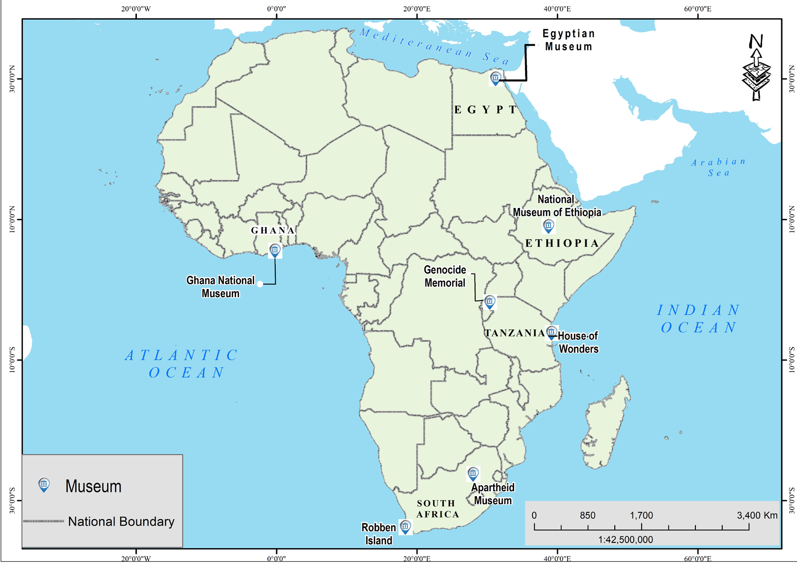

Functions of museums
Museums keep a wide variety of historical and cultural materials under one roof. These consist of objects rich in information that benefit the present and future generations. Furthermore, national museums keep historical objects from all over the country. They make them available for viewing and learning by the public. Museums preserve national heritage and historical information.
Similarly, museums provide education to people about different cultures. In addition, they are a source of entertainment. People can visit museums for leisure.
Likewise, museums are used as sources of income through fees paid by tourists. Local and international tourists visit museums to view various cultural objects and learn from the past.
Advantages of museums
Museums are used for preserving the culture of the respective society. In addition, artefacts preserved in museums are not borrowed for whatever purpose, a condition that increases their security.